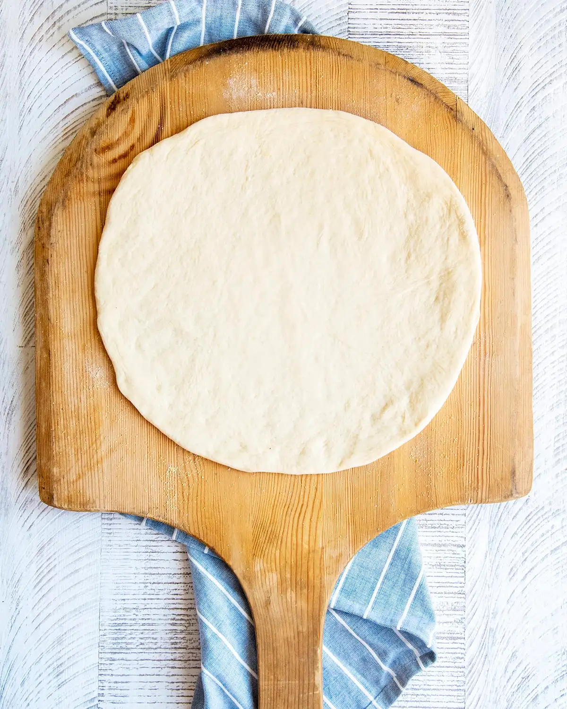

Thin-Crust Pizza Dough

Fast, Crispy, and Elevated At-Home Pizza Dough
This thin-crust pizza dough doesn't require a lot of time to make, yet it has an elevated texture and flavor for at-home pizza. The crispiness and texture is best complimented with a pizza stone or steel.
Best of all, this dough doesn't require a rise! Because of that, this is a really amazing fast and delicious weeknight dinner.
Ingredients
- 3/4 cup lukewarm water
- 1 teaspoon active dry yeast
- 1/4 teaspoon white sugar
- 2 cups all-purpose flour, divided
- 1/2 teaspoon salt
Steps
- Add 110 degree F water to a bowl. Stir in yeast and sugar. Let stand until yeast forms a creamy foam, 5-8 minutes.
- Combine 1 3/4 cups flour in yeast mixture; mix well until dough comes together.
- Transfer dough to a floured surface and knead until smooth. This is probably fast for seasoned kneaders, but it usually takes me at least 10 minutes.
- Add remaining 1/4 cup flour if dough is too sticky.
- Roll dough into a 12" circle.
- Bake at 500 degrees for 8-10 minutes. A pizza stone or steel is highly recommended, and you should follow the proper instructions for preheating with your chosen equipment.